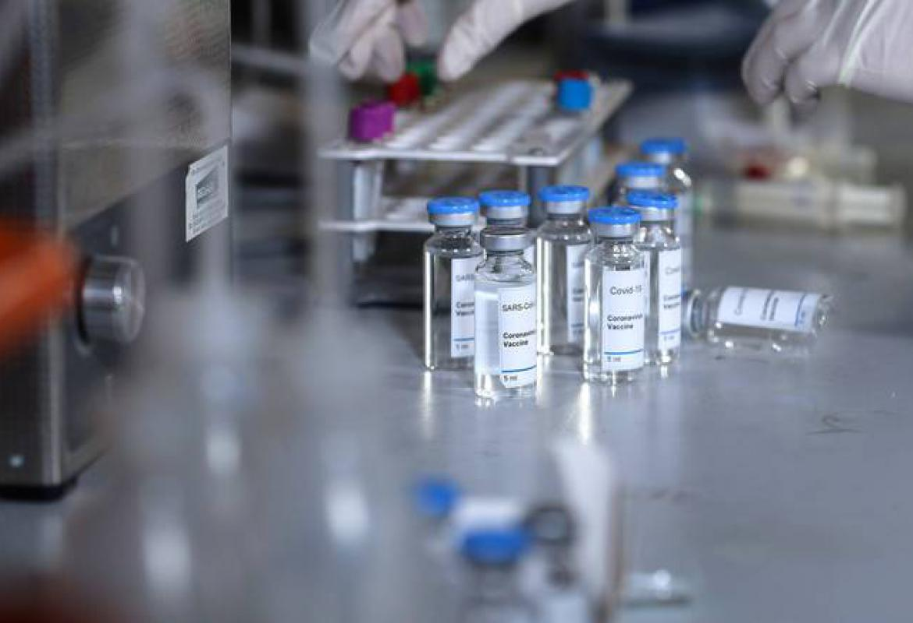
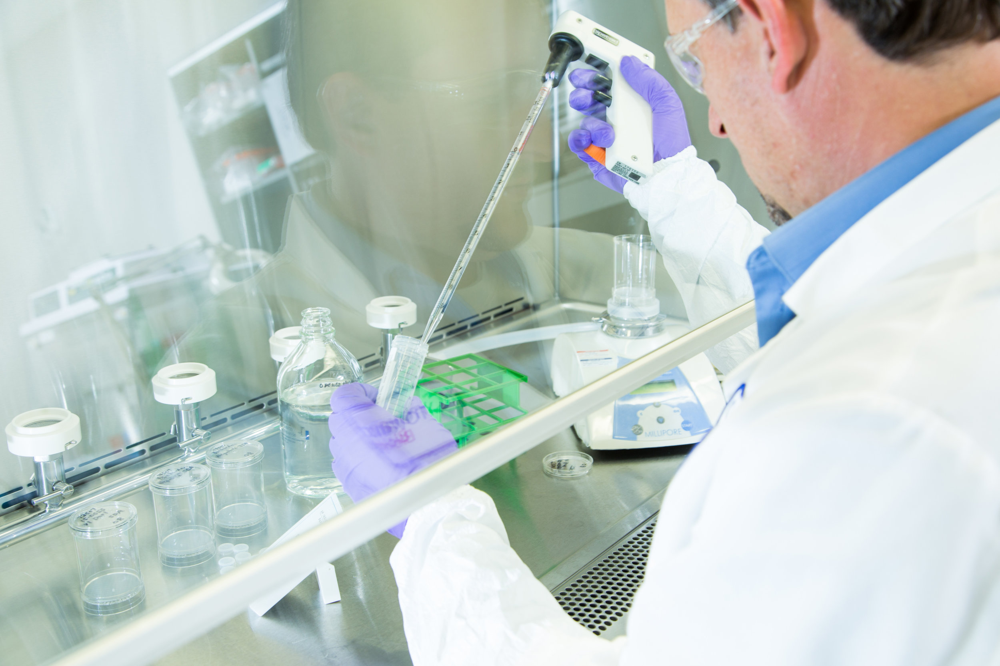
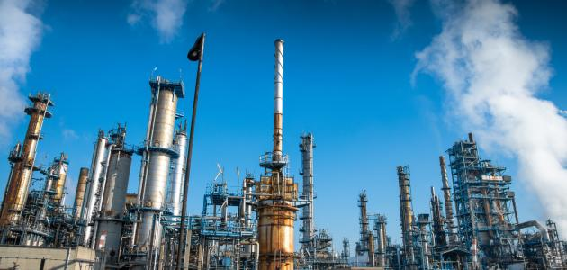
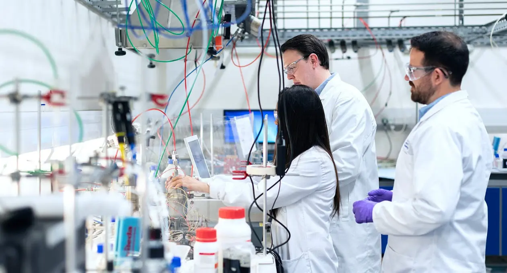
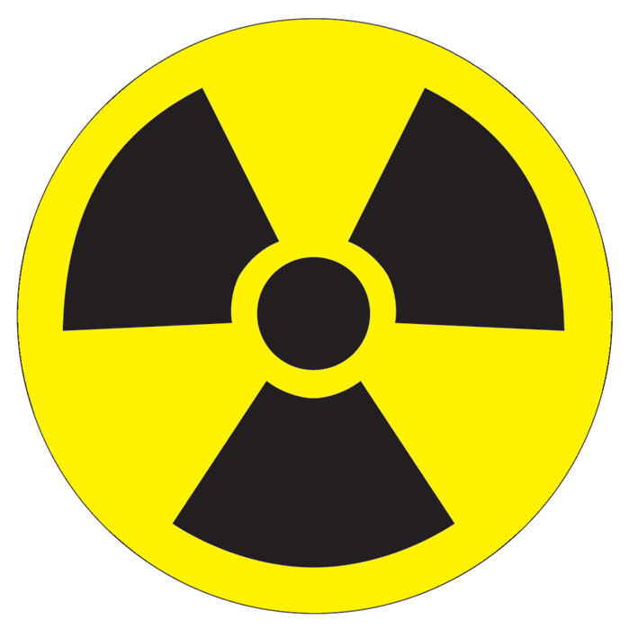

عن قسم A.I.C ZU
في عام 2021 تم اطلاق برنامج الكيمياء التطبيقية الصناعية بكلية العلوم- جامعة الزقازيق ولذلك بعد معرفه مدى حاجه سوق العمل للكيمياء التطبيقية كما ان یعد علم الكیماء الصناعیة من أھم العلوم المختلفة التي تخدم الإنسان بشتى التطبیقات الحیاتیة الیومیة بدایة من غذاء الإنسان، دھانات المنازل والسیارات والكھرباء وبطاریات السیارات وتطبیقات المیاه ومواد البناء والبتروكیماویات والمنظفات والمطھرات والعطور والأدویة والمبیدات الحشریة وملوثات الھواء والماء والتربة، ویتضح مما سبق أن ھناك حاجة ملحة لإنشاء واطلاق برنامج بكالوریوس للكیمیاء التطبیقیة الصناعیة بكلیة العلوم جامعة الزقازیق لسد الفجوة بین ما ھو موجود حالیا ما ھو مأمول، حیث من المأمول إعداد خریج قادر علي أن یطلق مشروعه بنفسه من خلال الصناعات الكیمیائیة المختلفة في مجال الدھانات والبویات والمنظفات والمطھرات و غیرھا.
تسعى كلیة العلوم – جامعة الزقازیق ان تكون رائدة ومتمیزة من خلال تقدیم برنامج الكیمیاء التطبیقیة الصناعیة التقني لتلبیة احتیاجات سوق العمل وخدمة المجتمع وتنمیة البیئة محلیا واقلیمیا و دولیا.
یھدف البرنامج إلي ابتكار إطار علمي متمیز لاكساب الطلاب المعلومات والتطبیقات اللازمة عن علوم الكیمیاء التطبیقیة الصناعیة وفق معاییر الجودة، وإعداد خریجین ذوي مھارات ذھنیة ومھنیة یمكن تطبیقھا في مجال الصناعات الحدیثة المتعددة،ملتزمین بأخلاقیات المھنة و لھم قدرة على المنافسة و التطویر في سوق العمل. ویمنح البرنامج درجة البكالوریوس في علوم الكیمیاء التطبیقیة الصناعیةمن كلیة العلوم – جامعة الزقازیق طبقا لنظام الساعات المعتمدة
یقوم برنامج الكیمیاء التطبیقیة الصناعیة لدرجة البكالوریوس علي تخریج أخصائیین بالكیمیاء التطبیقیة الصناعیةلخدمة جمیع مجالات العمل كالآتي :


حیث العمل بمجال التحالیل الكیمیائیة الصناعیة والتحالیل الطبیة وتحالیل الدواء وشركات الأدویة واللقاحات والأمصال، والمعامل المركزیة التابعة لوزارة الصحة والصناعات الكیمیائیة بالتخصصات الطبیة لإنتاج الأنزیمات والھرمونات والفیتامینات والمغذیات الطبیة
حیث للأخصائیین بالكیمیاء الصناعیة فرص عمل بشركات الأغذیة، الإنتاج الزراعي للمبیدات الحشریة وشركات الأسمدة وشركات المشروبات والعصائر والمخصبات المعدنیة والحیویة، وحفظ الأغذیة والثروة السمكیة بشركات تصنیع وتعلیب الأسماك وكیمیاء النباتات والمنتجات الطبیعیة
بشركات تدویر المخلفات والتقنین البیئي الكیمیائي للشركات القائمة علي التصنیع الكیمیائي وكذلك أخصائیین قیاس الأثر البیئي لشركات التصنیع الكیمیائي


بالصناعات المعدنیة المختلفة، والبتروكیمیاویات وشركات البترول والغاز الطبیعي ومصانع البطاریات ومصانع الدھانات والبویات والمنظفات، المطھرات
كالأخصائیین الكیمیائیین لتحالیل السموم والأدلة الجنائیة والتحالیل الكیمیائیة لبصمة DNA للمتھمین وفحوصات المخدرات

حیث للخریجین فرص عمل بالمعامل المركزیة للحرب الكیمیائیة والصناعات الكیمیائیة التي تخدم النواحي العسكریة
قطاع الأعمال العام و الشركات المختلفة القائمة على التصنیع الكیمائي و الثروة المعدنیة و تلبیة احتیاجات المناطق الصناعیة في نطاق محافظة الشرقیة مثل مصانع منطقة العاشر من رمضان للاغذیة و الألبان و الغزل و النسیج و الأصباغ و البویات و المنظفات و المطھرات و مستحضرات التجمیل والعطور و المنظفات الصناعیة و المخصبات الصناعیة.....الخ
العمل الخارجي ، حیث یستطیع الاخصائیون بالكیمیاء التطبیقیة الصناعیةإ نشاء مشروعات صغیرة خاصة بالتصنیع الكیمائي بمجالات تطبیقیة بعیدا عن كاھل الدولة
تضم كلیة العلوم جامعة الزقازیق كوكبة من الأساتذة المتخصصین بكافة التخصصات الموجوده بالبرنامج مما یكفي للتدریس والتدریب بھذا البرنامج
تتوفر بكلیة العلوم جامعة الزقازیق قدرة مؤسسیة عالیة تعمل علي إنجاح البرنامج تتمثل في ستة مباني وعدد 14 قاعة دراسیة و4 مدرجات وعدد من المعامل الطلابیة موزعة على الاقسام العلمیة
تواجد بالمیدان الكثیر من المتخصصین بالكیمیاء بصفة عامة، ولكن الفجوة الحادثة تتمثل في ندرة وجود أخصائیین بالكیمیاء التطبیقیة الصناعیة. ھؤلاء الإخصائیین سیكون لھم درایة كاملة بالتصنیع الكیمائي الذي یخدم شتى المجالات التطبیقیة في المناطق و الشركات الصناعیة
الكیمیاء التطبیقیة الصناعیة ھي فرع الكیمیاء الذي یطبق النظریات والخطوات الفیزیائیة والكیمیائیة نحو تحویل المواد الخام إلى منتجات كیمیائیة تستخدم كتطبیقات كیمیائیة بكافة نواحي الحیاة مثل البویات والدھانات و المنظفات والمطھرات و العطور و مضادات المیكروبات والبتروكیماویات لذا كان الھدف من انشاء برنامج بكالوریوس العلوم في الكیمیاء التطبیقیة الصناعیة ھو إنتاج خریجین یتمتعون بمھارة عالیة في ھذا النشاط, ًا في الكیمیاء والریاضیات والفیزیاء فخریج الكیمیاء ویمكن تحقیق ذلك من خلال إعطاء ا ً لطلاب أساسا قوی الصناعیة ھو كیمیائي ذو روابط معرفیة في الھندسة الكیمیائیة ، والتصنیع الكیمیائي، والاقتصاد والإدارة الصناعیة الكیمیائیة و ایضا سیستطیع إجراء الأبحاث وتطویر وتحسین خصائص المنتجات التي نستخدمھا كل یوم من خلال اختیار المواد الخام، وتصمیم العملیات الكیمیائیة وتحسین ظروف الإنتاج
مرحباً بكم , الكيمياء التطبيقية الصناعية كلية العلوم - جامعة الزقازيق البرامج المميزة
الخدمة الاليه كيمياء تطبيقية صناعية
Copyright© 2023 All Right Reserved A.I.C Zu